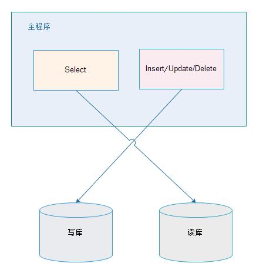
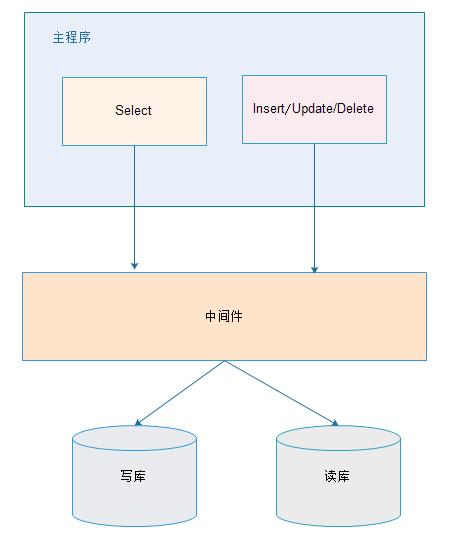
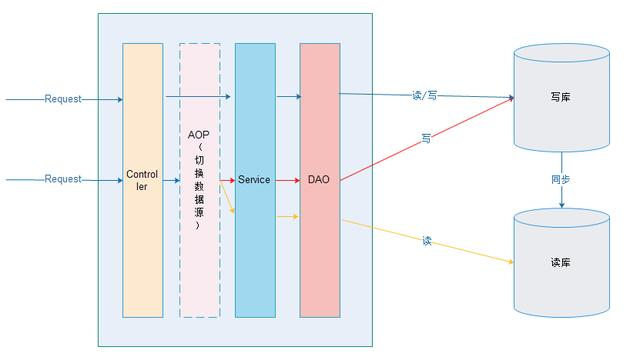
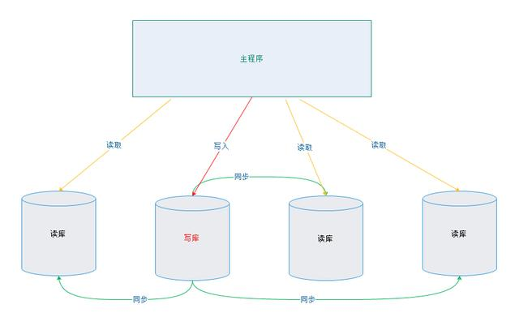
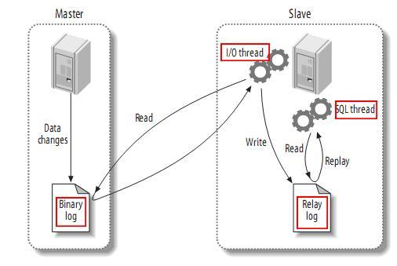
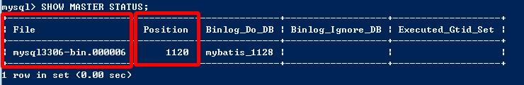
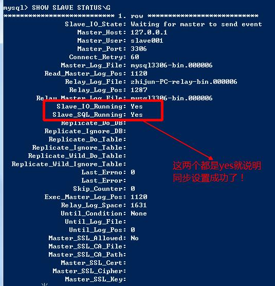

我们一般应用对数据库而言都是"读多写少"，也就说对数据库读取数据的压力比较大，有一个思路就是说采用数据库集群的方案，
其中一个是主库，负责写入数据，我们称之为：写库；
其它都是从库，负责读取数据，我们称之为：读库；
那么，对我们的要求是：
1、 读库和写库的数据一致；
2、 写数据必须写到写库；
3、 读数据必须到读库；
解决读写分离的方案有两种：应用层解决和中间件解决。

优点：
1、 多数据源切换方便，由程序自动完成；
2、 不需要引入中间件；
3、 理论上支持任何数据库；
缺点：
1、 由程序员完成，运维参与不到；
2、 不能做到动态增加数据源；

优缺点：
优点：
1、 源程序不需要做任何改动就可以实现读写分离；
2、 动态添加数据源不需要重启程序；
缺点：
1、 程序依赖于中间件，会导致切换数据库变得困难；
2、 由中间件做了中转代理，性能有所下降；
相关中间件产品使用：
mysql-proxy：
Amoeba for MySQL：和

在进入Service之前，使用AOP来做出判断，是使用写库还是读库，判断依据可以根据方法名判断，比如说以query、find、get等开头的就走读库，其他的走写库。
import org.springframework.jdbc.datasource.lookup.AbstractRoutingDataSource;
/**
* 定义动态数据源，实现通过集成Spring提供的AbstractRoutingDataSource，只需要实现determineCurrentLookupKey方法即可
*
* 由于DynamicDataSource是单例的，线程不安全的，所以采用ThreadLocal保证线程安全，由DynamicDataSourceHolder完成。
*
* @author zhijun
*
*/
public class DynamicDataSource extends AbstractRoutingDataSource{
@Override
protected Object determineCurrentLookupKey() {
// 使用DynamicDataSourceHolder保证线程安全，并且得到当前线程中的数据源key
return DynamicDataSourceHolder.getDataSourceKey();
}
}
/**
*
* 使用ThreadLocal技术来记录当前线程中的数据源的key
*
* @author zhijun
*
*/
public class DynamicDataSourceHolder {
//写库对应的数据源key
private static final String MASTER = "master";
//读库对应的数据源key
private static final String SLAVE = "slave";
//使用ThreadLocal记录当前线程的数据源key
private static final ThreadLocal<String> holder = new ThreadLocal<String>();
/**
* 设置数据源key
* @param key
*/
public static void putDataSourceKey(String key) {
holder.set(key);
}
/**
* 获取数据源key
* @return
*/
public static String getDataSourceKey() {
return holder.get();
}
/**
* 标记写库
*/
public static void markMaster(){
putDataSourceKey(MASTER);
}
/**
* 标记读库
*/
public static void markSlave(){
putDataSourceKey(SLAVE);
}
}
import org.apache.commons.lang3.StringUtils;
import org.aspectj.lang.JoinPoint;
/**
* 定义数据源的AOP切面，通过该Service的方法名判断是应该走读库还是写库
*
* @author zhijun
*
*/
public class DataSourceAspect {
/**
* 在进入Service方法之前执行
*
* @param point 切面对象
*/
public void before(JoinPoint point) {
// 获取到当前执行的方法名
String methodName = point.getSignature().getName();
if (isSlave(methodName)) {
// 标记为读库
DynamicDataSourceHolder.markSlave();
} else {
// 标记为写库
DynamicDataSourceHolder.markMaster();
}
}
/**
* 判断是否为读库
*
* @param methodName
* @return
*/
private Boolean isSlave(String methodName) {
// 方法名以query、find、get开头的方法名走从库
return StringUtils.startsWithAny(methodName, "query", "find", "get");
}
}
jdbc.master.driver=com.mysql.jdbc.Driver
jdbc.master.url=jdbc:mysql://127.0.0.1:3306/mybatis_1128?useUnicode=true&characterEncoding=utf8&autoReconnect=true&allowMultiQueries=true
jdbc.master.username=root
jdbc.master.password=123456
jdbc.slave01.driver=com.mysql.jdbc.Driver
jdbc.slave01.url=jdbc:mysql://127.0.0.1:3307/mybatis_1128?useUnicode=true&characterEncoding=utf8&autoReconnect=true&allowMultiQueries=true
jdbc.slave01.username=root
jdbc.slave01.password=123456
<!-- 配置连接池 -->
<bean id="masterDataSource" class="com.jolbox.bonecp.BoneCPDataSource"
destroy-method="close">
<!-- 数据库驱动 -->
<property name="driverClass" value="${jdbc.master.driver}" />
<!-- 相应驱动的jdbcUrl -->
<property name="jdbcUrl" value="${jdbc.master.url}" />
<!-- 数据库的用户名 -->
<property name="username" value="${jdbc.master.username}" />
<!-- 数据库的密码 -->
<property name="password" value="${jdbc.master.password}" />
<!-- 检查数据库连接池中空闲连接的间隔时间，单位是分，默认值：240，如果要取消则设置为0 -->
<property name="idleConnectionTestPeriod" value="60" />
<!-- 连接池中未使用的链接最大存活时间，单位是分，默认值：60，如果要永远存活设置为0 -->
<property name="idleMaxAge" value="30" />
<!-- 每个分区最大的连接数 -->
<property name="maxConnectionsPerPartition" value="150" />
<!-- 每个分区最小的连接数 -->
<property name="minConnectionsPerPartition" value="5" />
</bean>
<!-- 配置连接池 -->
<bean id="slave01DataSource" class="com.jolbox.bonecp.BoneCPDataSource"
destroy-method="close">
<!-- 数据库驱动 -->
<property name="driverClass" value="${jdbc.slave01.driver}" />
<!-- 相应驱动的jdbcUrl -->
<property name="jdbcUrl" value="${jdbc.slave01.url}" />
<!-- 数据库的用户名 -->
<property name="username" value="${jdbc.slave01.username}" />
<!-- 数据库的密码 -->
<property name="password" value="${jdbc.slave01.password}" />
<!-- 检查数据库连接池中空闲连接的间隔时间，单位是分，默认值：240，如果要取消则设置为0 -->
<property name="idleConnectionTestPeriod" value="60" />
<!-- 连接池中未使用的链接最大存活时间，单位是分，默认值：60，如果要永远存活设置为0 -->
<property name="idleMaxAge" value="30" />
<!-- 每个分区最大的连接数 -->
<property name="maxConnectionsPerPartition" value="150" />
<!-- 每个分区最小的连接数 -->
<property name="minConnectionsPerPartition" value="5" />
</bean>
<!-- 定义数据源，使用自己实现的数据源 -->
<bean id="dataSource" class="cn.itcast.usermanage.spring.DynamicDataSource">
<!-- 设置多个数据源 -->
<property name="targetDataSources">
<map key-type="java.lang.String">
<!-- 这个key需要和程序中的key一致 -->
<entry key="master" value-ref="masterDataSource"/>
<entry key="slave" value-ref="slave01DataSource"/>
</map>
</property>
<!-- 设置默认的数据源，这里默认走写库 -->
<property name="defaultTargetDataSource" ref="masterDataSource"/>
</bean>
<!-- 定义事务管理器 -->
<bean id="transactionManager"
class="org.springframework.jdbc.datasource.DataSourceTransactionManager">
<property name="dataSource" ref="dataSource" />
</bean>
<!-- 定义事务策略 -->
<tx:advice id="txAdvice" transaction-manager="transactionManager">
<tx:attributes>
<!--定义查询方法都是只读的 -->
<tx:method name="query*" read-only="true" />
<tx:method name="find*" read-only="true" />
<tx:method name="get*" read-only="true" />
<!-- 主库执行操作，事务传播行为定义为默认行为 -->
<tx:method name="save*" propagation="REQUIRED" />
<tx:method name="update*" propagation="REQUIRED" />
<tx:method name="delete*" propagation="REQUIRED" />
<!--其他方法使用默认事务策略 -->
<tx:method name="*" />
</tx:attributes>
</tx:advice>
<!-- 定义AOP切面处理器 -->
<bean class="cn.itcast.usermanage.spring.DataSourceAspect" id="dataSourceAspect" />
<aop:config>
<!-- 定义切面，所有的service的所有方法 -->
<aop:pointcut id="txPointcut" expression="execution(* xx.xxx.xxxxxxx.service.*.*(..))" />
<!-- 应用事务策略到Service切面 -->
<aop:advisor advice-ref="txAdvice" pointcut-ref="txPointcut"/>
<!-- 将切面应用到自定义的切面处理器上，-9999保证该切面优先级最高执行 -->
<aop:aspect ref="dataSourceAspect" order="-9999">
<aop:before method="before" pointcut-ref="txPointcut" />
</aop:aspect>
</aop:config>
之前的实现我们是将通过方法名匹配，而不是使用事务策略中的定义，我们使用事务管理策略中的规则匹配。
<!-- 定义AOP切面处理器 -->
<bean class="cn.itcast.usermanage.spring.DataSourceAspect" id="dataSourceAspect">
<!-- 指定事务策略 -->
<property name="txAdvice" ref="txAdvice"/>
<!-- 指定slave方法的前缀（非必须） -->
<property name="slaveMethodStart" value="query,find,get"/>
</bean>
import java.lang.reflect.Field;
import java.util.ArrayList;
import java.util.List;
import java.util.Map;
import org.apache.commons.lang3.StringUtils;
import org.aspectj.lang.JoinPoint;
import org.springframework.transaction.interceptor.NameMatchTransactionAttributeSource;
import org.springframework.transaction.interceptor.TransactionAttribute;
import org.springframework.transaction.interceptor.TransactionAttributeSource;
import org.springframework.transaction.interceptor.TransactionInterceptor;
import org.springframework.util.PatternMatchUtils;
import org.springframework.util.ReflectionUtils;
/**
* 定义数据源的AOP切面，该类控制了使用Master还是Slave。
*
* 如果事务管理中配置了事务策略，则采用配置的事务策略中的标记了ReadOnly的方法是用Slave，其它使用Master。
*
* 如果没有配置事务管理的策略，则采用方法名匹配的原则，以query、find、get开头方法用Slave，其它用Master。
*
* @author zhijun
*
*/
public class DataSourceAspect {
private List<String> slaveMethodPattern = new ArrayList<String>();
private static final String[] defaultSlaveMethodStart = new String[]{ "query", "find", "get" };
private String[] slaveMethodStart;
/**
* 读取事务管理中的策略
*
* @param txAdvice
* @throws Exception
*/
@SuppressWarnings("unchecked")
public void setTxAdvice(TransactionInterceptor txAdvice) throws Exception {
if (txAdvice == null) {
// 没有配置事务管理策略
return;
}
//从txAdvice获取到策略配置信息
TransactionAttributeSource transactionAttributeSource = txAdvice.getTransactionAttributeSource();
if (!(transactionAttributeSource instanceof NameMatchTransactionAttributeSource)) {
return;
}
//使用反射技术获取到NameMatchTransactionAttributeSource对象中的nameMap属性值
NameMatchTransactionAttributeSource matchTransactionAttributeSource = (NameMatchTransactionAttributeSource) transactionAttributeSource;
Field nameMapField = ReflectionUtils.findField(NameMatchTransactionAttributeSource.class, "nameMap");
nameMapField.setAccessible(true); //设置该字段可访问
//获取nameMap的值
Map<String, TransactionAttribute> map = (Map<String, TransactionAttribute>) nameMapField.get(matchTransactionAttributeSource);
//遍历nameMap
for (Map.Entry<String, TransactionAttribute> entry : map.entrySet()) {
if (!entry.getValue().isReadOnly()) {//判断之后定义了ReadOnly的策略才加入到slaveMethodPattern
continue;
}
slaveMethodPattern.add(entry.getKey());
}
}
/**
* 在进入Service方法之前执行
*
* @param point 切面对象
*/
public void before(JoinPoint point) {
// 获取到当前执行的方法名
String methodName = point.getSignature().getName();
boolean isSlave = false;
if (slaveMethodPattern.isEmpty()) {
// 当前Spring容器中没有配置事务策略，采用方法名匹配方式
isSlave = isSlave(methodName);
} else {
// 使用策略规则匹配
for (String mappedName : slaveMethodPattern) {
if (isMatch(methodName, mappedName)) {
isSlave = true;
break;
}
}
}
if (isSlave) {
// 标记为读库
DynamicDataSourceHolder.markSlave();
} else {
// 标记为写库
DynamicDataSourceHolder.markMaster();
}
}
/**
* 判断是否为读库
*
* @param methodName
* @return
*/
private Boolean isSlave(String methodName) {
// 方法名以query、find、get开头的方法名走从库
return StringUtils.startsWithAny(methodName, getSlaveMethodStart());
}
/**
* 通配符匹配
*
* Return if the given method name matches the mapped name.
* <p>
* The default implementation checks for "xxx*", "*xxx" and "*xxx*" matches, as well as direct
* equality. Can be overridden in subclasses.
*
* @param methodName the method name of the class
* @param mappedName the name in the descriptor
* @return if the names match
* @see org.springframework.util.PatternMatchUtils#simpleMatch(String, String)
*/
protected boolean isMatch(String methodName, String mappedName) {
return PatternMatchUtils.simpleMatch(mappedName, methodName);
}
/**
* 用户指定slave的方法名前缀
* @param slaveMethodStart
*/
public void setSlaveMethodStart(String[] slaveMethodStart) {
this.slaveMethodStart = slaveMethodStart;
}
public String[] getSlaveMethodStart() {
if(this.slaveMethodStart == null){
// 没有指定，使用默认
return defaultSlaveMethodStart;
}
return slaveMethodStart;
}
}
很多实际使用场景下都是采用"一主多从"的架构的，所有我们现在对这种架构做支持，目前只需要修改DynamicDataSource即可。

import java.lang.reflect.Field;
import java.util.ArrayList;
import java.util.List;
import java.util.Map;
import java.util.concurrent.atomic.AtomicInteger;
import javax.sql.DataSource;
import org.slf4j.Logger;
import org.slf4j.LoggerFactory;
import org.springframework.jdbc.datasource.lookup.AbstractRoutingDataSource;
import org.springframework.util.ReflectionUtils;
/**
* 定义动态数据源，实现通过集成Spring提供的AbstractRoutingDataSource，只需要实现determineCurrentLookupKey方法即可
*
* 由于DynamicDataSource是单例的，线程不安全的，所以采用ThreadLocal保证线程安全，由DynamicDataSourceHolder完成。
*
* @author zhijun
*
*/
public class DynamicDataSource extends AbstractRoutingDataSource {
private static final Logger LOGGER = LoggerFactory.getLogger(DynamicDataSource.class);
private Integer slaveCount;
// 轮询计数,初始为-1,AtomicInteger是线程安全的
private AtomicInteger counter = new AtomicInteger(-1);
// 记录读库的key
private List<Object> slaveDataSources = new ArrayList<Object>(0);
@Override
protected Object determineCurrentLookupKey() {
// 使用DynamicDataSourceHolder保证线程安全，并且得到当前线程中的数据源key
if (DynamicDataSourceHolder.isMaster()) {
Object key = DynamicDataSourceHolder.getDataSourceKey();
if (LOGGER.isDebugEnabled()) {
LOGGER.debug("当前DataSource的key为: " + key);
}
return key;
}
Object key = getSlaveKey();
if (LOGGER.isDebugEnabled()) {
LOGGER.debug("当前DataSource的key为: " + key);
}
return key;
}
@SuppressWarnings("unchecked")
@Override
public void afterPropertiesSet() {
super.afterPropertiesSet();
// 由于父类的resolvedDataSources属性是私有的子类获取不到，需要使用反射获取
Field field = ReflectionUtils.findField(AbstractRoutingDataSource.class, "resolvedDataSources");
field.setAccessible(true); // 设置可访问
try {
Map<Object, DataSource> resolvedDataSources = (Map<Object, DataSource>) field.get(this);
// 读库的数据量等于数据源总数减去写库的数量
this.slaveCount = resolvedDataSources.size() - 1;
for (Map.Entry<Object, DataSource> entry : resolvedDataSources.entrySet()) {
if (DynamicDataSourceHolder.MASTER.equals(entry.getKey())) {
continue;
}
slaveDataSources.add(entry.getKey());
}
} catch (Exception e) {
LOGGER.error("afterPropertiesSet error! ", e);
}
}
/**
* 轮询算法实现
*
* @return
*/
public Object getSlaveKey() {
// 得到的下标为：0、1、2、3……
Integer index = counter.incrementAndGet() % slaveCount;
if (counter.get() > 9999) { // 以免超出Integer范围
counter.set(-1); // 还原
}
return slaveDataSources.get(index);
}
}

mysql主(称master)从(称slave)复制的原理：
1、 master将数据改变记录到二进制日志(binary log)中,也即是配置文件log-bin指定的文件(这些记录叫做二进制日志事件，binary log events)
2、 slave将master的binary log events拷贝到它的中继日志(relay log)
3、 slave重做中继日志中的事件,将改变反映它自己的数据(数据重演)
1、 主DB server和从DB server数据库的版本一致
2、 主DB server和从DB server数据库数据一致[ 这里就会可以把主的备份在从上还原，也可以直接将主的数据目录拷贝到从的相应数据目录]
3、 主DB server开启二进制日志,主DB server和从DB server的server_id都必须唯一
在my.ini修改：
#开启主从复制，主库的配置
log-bin = mysql3306-bin
#指定主库serverid
server-id=101
#指定同步的数据库，如果不指定则同步全部数据库
binlog-do-db=mybatis_1128
执行SQL语句查询状态：SHOW MASTER STATUS

需要记录下Position值，需要在从库中设置同步起始值。
#授权用户slave01使用123456密码登录mysql
grant replication slave on *.* to 'slave01'@'127.0.0.1' identified by '123456';
flush privileges;
在my.ini修改：
#指定serverid，只要不重复即可，从库也只有这一个配置，其他都在SQL语句中操作
server-id=102
以下执行SQL：
CHANGE MASTER TO
master_host='127.0.0.1',
master_user='slave01',
master_password='123456',
master_port=3306,
master_log_file='mysql3306-bin.000006',
master_log_pos=1120;
#启动slave同步
START SLAVE;
#查看同步状态
SHOW SLAVE STATUS;
